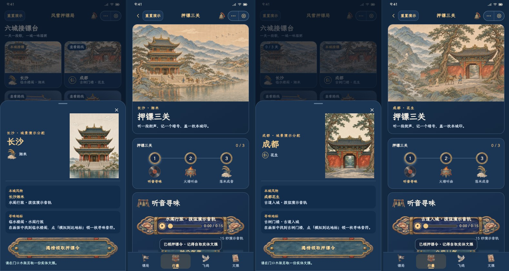

长沙 · 水阁行旅
循水入阁，听渡船铃，接一袋湘米。
大冰的小屋 · 六城一碗粥
小程序演示手册
首页首列为长沙与成都，点城市卡即可切换分舵并领令。以下以西安南门为例。顾客在本城领令、走完三关，再收齐五座异城的民谣粮票，带着一印五票到吧台交镖。

选「西安南门」，查看永宁门与红枣，点「揭榜领取押镖令」。在门店演示时，同步展示木架上的实体歌本文牒。
听街声，点「模拟到达地标」并保存寻味海报。读火塘故事，输入「木吉他」解锁歌谱；确认添米与盖印，再模拟扫米缸木牌，启用飞鸽匣。
选异城，填入本城寄语，附上十秒演示音轨并勾选同意，点「放飞信鸽」。可在发件箱查看刚寄出的粮票。
从收件箱逐张打开武汉、南昌、西塘、长沙、成都的来票，点「模拟扫码 · 贴入文牒」。六格齐全后出示吧台核销码，输入店员演示口令 2026，查看「交镖礼成」。
下方可直接操作。投影时可独立开启小程序，在桌面宽度使用右侧路演控制台。